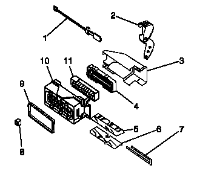
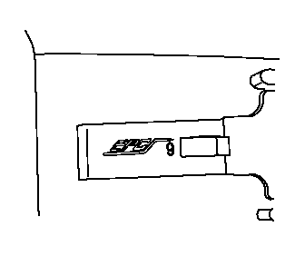
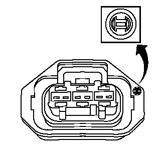
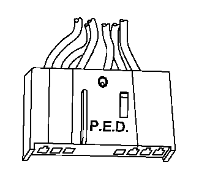
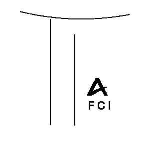
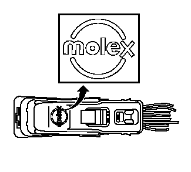
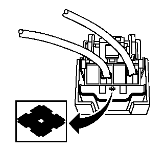
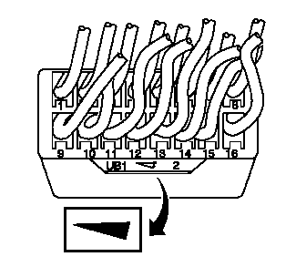

连接器修理
连接器的修理包含所有连接器修理的一个列表。连接器修理按连接器制造商列出，然后按连接器类型。如果维修技师不能识别连接器制造商，参见以下的识别连接器。了解连接器制造商有助于从以下列表中找到正确的连接器：
- • 连接器定位器锁
- • 端子定位器锁
- • AFL/EPC连接器
- • Bosch连接器（BSK）、Bosch连接器（0.64）、Bosch连接器（2.8 JPT）、Bosch连接器（ECM）
- • Delphi连接器（12路）、Delphi连接器（推入定位）、Delphi连接器（Weather Pack）、Delphi连接器（拉入定位）、Delphi连接器（Micro-Pack 100W）、Delphi连接器（Micro 0.64）、Delphi连接器（转向机）
- • FCI连接器（SIR）、FCI连接器（操纵杆锁）
- • FEP连接器（转向机）
- • JST连接器
- • Kostal连接器（变速器）、Kostal连接器（预热塞控制模块）
- • Molex连接器（SIR）、Molex连接器（操纵杆锁）
- • Sumitomo连接器
- • Tyco/AMP连接器（SIR）、Tyco/AMP连接器（43路）、Tyco/AMP连接器（102路直列式）、Tyco/AMP连接器（CM 42路）、Tyco/AMP连接器（0.25盖）、Tyco/AMP连接器（车门模块）、Tyco/AMP连接器（传感器）、Tyco/AMP连接器（座椅）
- • Yazaki连接器（16路）、Yazaki连接器（2路）
- • 修理连接器端子（端子修理）、修理连接器端子（终端引线修理）
连接器剖析

识别连接器
当尝试找出正确的连接器修理程序时，了解连接器制造商十分有用。上汽通用汽车使用很多不同的连接器设计，有时候很难识别连接器制造商。本章中的信息有助于识别连接器制造商。
上汽通用汽车的大部分连接器由以下连接器制造商生产。
- • AFL/EPC（Alcoa Fujikura公司/设计塑料件）
- • Bosch
- • Delphi
- • FCI（Framatome连接器国际）
- • JAE（日本航空电子）
- • JST（日本无焊剂端子）
- • Kostal
- • Molex
- • Sumitomo
- • Tyco/AMP
- • Yazaki
识别连接器制造商通常很难。当试图确定连接器制造商时，查找唯一属于该连接器供应商的特定标记。这些标记中的大多数很难找到或看到。小心检查连接器，并参见以下的信息，了解连接器识别标记的图片和说明。
-
• 大多数AFL连接器在其连接器壳体上有EPC。一些更小的连接器没有任何标记。
-
• 在某些情况下，连接器实际上会印有Bosch。如果连接器上不出现Bosch，请查找Bosch徽标。Bosch徽标是一个内部有钝切箭头的圆。该徽标可能出现在连接器上的任何部位，而且通常十分小。
-
• 在某些情况下，连接器实际上会印有Delphi。如果连接器上未印刷Delphi，则查看PED。在两种情况下，Delphi或PED均无特定方向，可以出现在连接器上任何位置。
-
• FCI连接器可能含有FCI徽标。该徽标为上面带有“A”的FCI字母。
-
• JAE连接器上印有小字母JAE。

-
• JST连接器上印有小字母JST，类似于上述情况。徽标的位置因连接器尺寸和型号的不同而变化。

- • Kostel上印有周围带有一个圈的字母“LK”。这些连接器通常作为变速器连接器使用。
-
• 大多数Molex连接器在其连接器外壳上会有Molex徽标。在某些情况下，这些连接器可能会有字母MX，随后会有些其它字母。第三个字母指示连接器的生产地。带有MXD的连接器是Molex连接器，生产地为底特律。Sumitomo在其连接器上有独特的符号，而且很可能是个零件号。该符号和侧面放置时的金刚石相似，类似于上述图示。该徽标可能出现在任何部位，但通常出现在外壳的线束侧。
- • Tyco/AMP有很多不同的、独特的连接器设计。其中一些可能有或可能没有可识别的标记。
-
• Yazaki有个楔形或箭头形状，类似于上述图示。